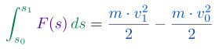

Substitution is given a physical meaning.
In physics, we take measurable quantities from the real world, and attempt to find
meaningful relationships between them. A basic example of this would be the
physical ideal of force. Force applied to an object changes the motion of an object.
Here’s the deal though, at a basic level and while we can put a physical
interpretation to this arithmetical definition, at the end of the day force is simply
“mass times acceleration.” The SI unit of force is a newton, which is defined to be
To get a feel for what a newton is, consider this: if an apple has a mass of , what
force would an apple exert on your hand due to the acceleration due to gravity?
Hence the “weight” of an apple is approximately .
In a similar way, the idea of kinetic energy, is “energy” objects have from motion.
It is defined by the formula The SI unit of energy is a joule, which is defined to be
To get a feel for the “size” of a joule, consider this: if an apple has a mass of
and it is dropped from a height of , then approximately joule of energy is
released when it hits the ground. Let’s see if we can explain why this is
true.
If an apple has a mass of and it is dropped from a height of , how much energy is
released when it hits the ground? Assume that the acceleration due to gravity is .
First we need to find the velocity at which the apple hits the ground. Let
represent acceleration at time and represent velocity. Since , we know that
Now we need to know how long it takes for the apple to hit the ground, after being
dropped from a height of meter. For this we’ll need a formula for position. Here , so
we’ll need to use an indefinite integral:
Since , write with me hence and . Solving the equation for tells us the time the
apple hits the ground. Write with me
So the apple hits the ground after seconds. Finally, the formula for kinetic energy is
Ah! So the kinetic energy released by an apple dropped from a height of meter is
approximately joule.
Finally work is defined to be accumulated force over a distance. Note, there must be
some force in the direction (or opposite direction) that the object is moving for it to
be considered work.
Which of the following are examples where work of this kind is
being done?
studying calculus a car applying breaks to come to a stop over a
distance of a young mathematician climbing a mountain a young mathematician
standing still, holding a page calculus book for minutes a young mathematician
walking around with a page calculus book a young mathematician picking up a
page calculus book
While studying calculus may “feel” like work, it is not (typically) an example of an
accumulated force over a distance, and hence no work is done.
On the other hand, a car applying breaks is a change in motion, and hence a force is
applied. Since this force is applied over a distance, work is done.
Climbing a mountain is also an example of work, as one is applying force
to overcome the acceleration due to gravity, over the distance that one is
climbing.
No work is done when holding a calculus book, as there is no accumulated force over
a distance.
It is also the case that no work is done when one walks around with a calculus book,
this is because the “force” is in a direction perpendicular to the motion.
Finally, when one picks up a calculus book, you are moving the book against the
force due to the acceleration due to gravity. Hence work is done.
Let’s again see why this is true.
If an apple has a mass of , how much work
is required to lift this apple meter? Assume that the acceleration due to
gravity is .
Well, work is computed by Since force is mass times acceleration,
So, our integral becomes
Ah! So when lifting an apple meter, requires joules of work. The sign is negative
since we are lifting
against the gravitational force.
Now we have a question:
Why do work and kinetic energy have the same units?
One way to answer this is via the Work-Energy Theorem.
Work-Energy Theorem Suppose that an object of mass is moving along a straight
line. If and are the the starting and ending positions, and are the the starting
and ending velocities, and is the force acting on the object for any given
position, then
First we need to get all of our symbolism out in the open.
Let:
- represent position with respect to time,
- represent velocity with respect to time,
- represent acceleration with respect to position,
- represent the starting time,
- represent the ending time,
then we also have that
- represents the starting position, ,
- represents the ending position, ,
- represents the starting velocity, ,
- represents the ending velocity, .
Now write with me, here we are working with functions of distance. We will use the
substitution formula,
transforming from right to left, to see that and we are now working with functions of
time. Since , we may write and now remember that , so However, , so rearranging
we have, Now we apply the substitution formula again, this time we will transform
left to right
and so we see and we are working with functions of
velocity. At last, setting and , we can evaluate this integral,
The Work-Energy theorem says that:

This could be interpreted as:
The accumulated force over distance is the change
in kinetic energy.
Moreover, this answers our initial question of why work and kinetic energy have the
same units. In essence, energy powers work.